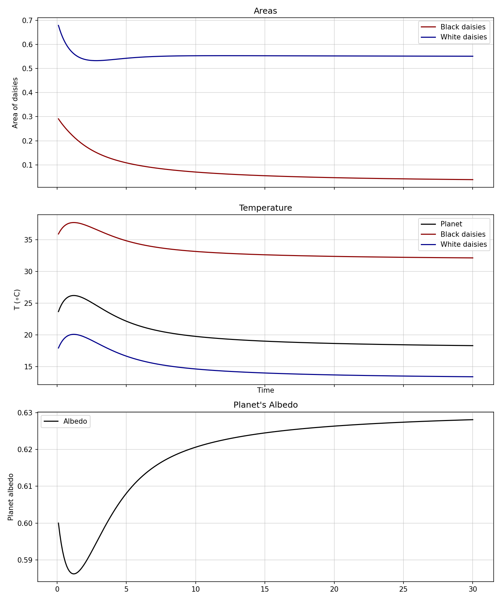
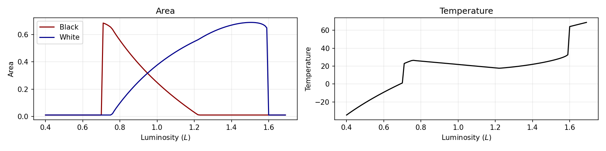
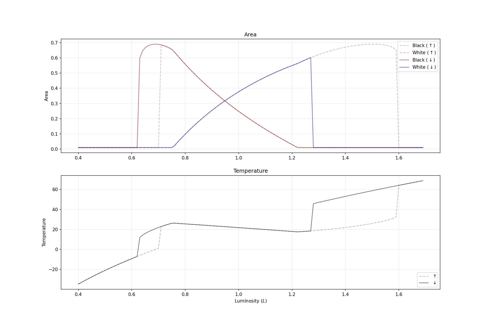

Daisyworld
Introduction
\[ \newcommand\a[1]{\alpha_{#1}} \]
In this problem we will work on the Daisyworld model that highlights the interdisciplinary nature of our world. This is a nice, simple example of how the principles of Physics can be used to understand how biological systems react to changes in their environment.
The following instructions are based on the article:
Watson, A. J., & Lovelock, J. E. (1983). Biological homoeostasis of the global environment: the parable of Daisyworld. Tellus Ser. B–Chem. Phys. Meteorol., 35(4), 284–289.
1 What is Daisyworld?
Daisyworld is a flatland that has two types of daisies (black and white). Not all the area is covered by daisies; there is non-fertile ground (where no daisies can grow) so there is bare, fertile ground where they can grow. The growth and death of the daisies are governed by the following equations:
Differential equations
\[ \begin{align} \begin{split} \dfrac{d\a{w}}{dt} &= \a{w}(x\beta - \gamma)\\ \dfrac{d\a{b}}{dt} &= \a{b}(x\beta - \gamma) \end{split} \end{align} \tag{1}\]
Area
\[ \a{w} + \a{b} + x = p \tag{2}\]
Growth rates
\[ \beta_{b,w} = 1 - 0.003265\,(22.5 - T_{b,w})^2 \tag{3}\]
Albedo
\[ A = \sum_i A_i = \a{g}A_{g}+\a{b}A_{b}+\a{w}A_{w} \tag{4}\]
\[ \a{g} = 1 - (\a{b} + \a{w}) \tag{5}\]
Energy balance of the planet
\[ \sigma(T_e + 273)^4 = SL(1-A) \tag{6}\]
Local Temperature
\[ (T_i+273)^4 = q(A-A_i) + (T_e+273)^4 \]
\(q\) here represents the transfer of energy between the various daisies and daisies and the ground. It is set up to preserve the energy balance between the sun and Daisyworld while making the white daises cooler and the black daises warmer!
If \(q=0\) there is perfect conduction and all local temperatures are the same as the mean temperature.
If \(q=\dfrac{SL}{\sigma}\) there is perfect insulation causing the local temperatures to be different and independently in balance with the solar radiation.
Since everyday temperatures are usually small compared to 273, we linearise the above equation, to arrive at \[ T_i = q'(A-A_i) + T_e \tag{7}\]
where \[ q' = \dfrac{q}{4}(273+22.5)^3 \tag{8}\]
| Variable | Meaning | Note |
|---|---|---|
| \(\a{w}, \a{b}\) | Fraction of the planetary area covered by white (black) daisies | |
| \(x\) | Fraction of the planetary area not covered by daisies | |
| \(\beta\) | Growth rate of daisies | See Equation 3 |
| \(\gamma\) | Death rate of daisies | \(0.3\) |
| \(p\) | Fraction of the planetary area that is fertile | |
| \(T_{b, w, g}\) | Local temperature of the white (w), black (b), ground (g) or the radiative temperature of the planet (e). | |
| \(\sigma\) | Stefan’s constant | \(5.670367\times 10^{-8}\) |
| \(L\) | Dimensionless measure of the luminosity of the daisyworld’s sun | |
| \(A_{b, w, g}\) | Albedo of the white (w), black (b) daises or ground (g) | |
| \(A\) | Albedo of the planet | |
| \(S\) | Solar constant | 917 |
| \(q\) | Represents the efficiency of the flow of energy across the planet | \(0.2\times\dfrac{SL}{\sigma}\) |
2 Tasks
Starting with areas \(\a{w}=.7\) and \(\a{b} = .3\) simulate the dynamics of Daisyworld for \(L = 1.2\). Run your simulation until the temperatures stabalise and then produce the following plots.
Just use Euler; you can use RK4 later, if there is a need.

We want to simulate the sun increasing in brightness. So, run your simulation of Daisyworld for increasing values of \(L\) to produce the following plots.

Notice how the biota is ‘fighting’ to keep the planet’s temperature stable.
Run your simulation for a situation where the luminosity first increases and then decreases to its original state. Your simulation should show hysteresis as shown in the plots below:
